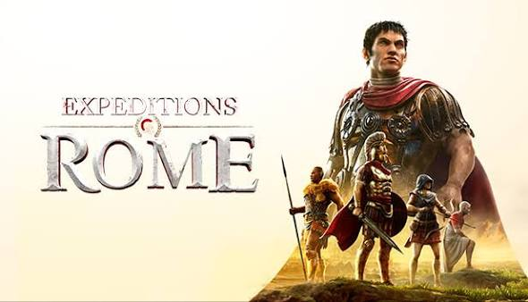
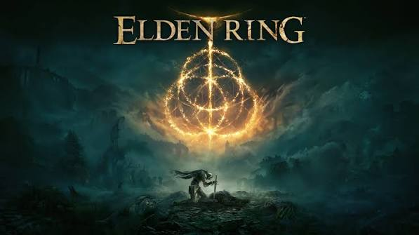
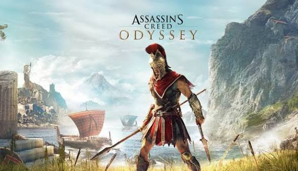

Expeditions: Rome
Desarrollador: THQ Nordic

Precio: 12,95€
- Juego de estrategia y rol táctico
- Ambientado en los últimos años de la República de Roma
- Participa en campañas a través de Asia Menor, África y la Galia
Bienvenido a nuestra plataforma dedicada a la historia antigua llevada al mundo del entretenimiento digital. Aquí exploramos títulos imprescindibles.
A través de este espacio podrás conocer los mejores exponentes del género clásico y su recreación histórica detallada.
Desarrollador: THQ Nordic

Precio: 12,95€
Desarrollador: FromSoftware

Precio: 59,95€
Desarrollador: Ubisoft

Precio: 19,95€
Consulta los registros completos en nuestro archivo de datos XML.